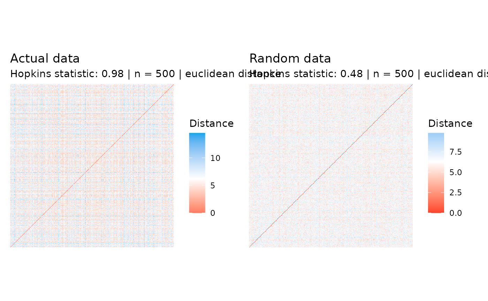

Before running a cluster analysis, check whether the data contains meaningful clusters at all (cluster algorithms always return clusters, even for random data). Following the approach described by datanovia, the function compares the actual data with a random dataset drawn from a uniform distribution within the range of each clustering variable, using
Usage
seg_clustering_tendency(
x,
n = NULL,
distance = NULL,
distance_engine = NULL,
vat_n = 500,
gradient = list(low = yougov_colors[["Red 1"]], mid = "white", high =
yougov_colors[["Blue 1"]]),
seed = 123,
verbose = TRUE
)Arguments
- x
The output of
seg_prep_data()(recommended), or a data frame or numeric matrix with already prepared clustering variables (no missing values). A distance matrix alone (e.g. fromseg_distance()) is not sufficient, as the Hopkins statistic requires the data.- n
Number of points sampled for the Hopkins statistic.
NULL(default) usesnrow(data) - 1, as in the datanovia article.- distance, distance_engine
Distance measure and engine for the VAT plots, see
seg_prep_data(). IfNULL(default), the settings of theseg_prep_data()output are used, otherwise"euclidean"and"auto".- vat_n
Number of respondents randomly sampled for the VAT plots, as these plots grow with the square of the number of respondents and become slow to render. Defaults to 500.
NULLuses all respondents.- gradient
A list with the colors
low,midandhighfor the VAT plots, passed tofactoextra::fviz_dist(). Small distances (similar respondents) are shown in thelowcolor.- seed
Random seed for the random dataset, the Hopkins sampling and the VAT sampling. The global random seed is left untouched. Defaults to 123.
- verbose
Logical. Whether to print the results. Defaults to
TRUE.
Value
An object of class seg_tendency, a list with the elements:
hopkins: tibble with the Hopkins statistic of the actual and the random data.plot: both VAT plots side by side.plot_actual,plot_random: the individual VAT plots (ggplot objects).random_data: the generated random dataset.settings: list of the settings used.
Details
the Hopkins statistic (via
factoextra::get_clust_tendency()), anda VAT plot (Visual Assessment of cluster Tendency, via
factoextra::fviz_dist()): an ordered dissimilarity matrix in which clusters appear as squares along the diagonal.
Interpretation
factoextra (>= 2.0) uses the corrected Hopkins statistic (Wright, 2022). Values close to 0.5 indicate uniformly distributed (random) data, values close to 1 indicate a clustering tendency. As a rule of thumb, values above 0.75 indicate a clear clustering tendency. The statistic of the actual data should be clearly higher than the one of the random data, and its VAT plot should show more structure (squares along the diagonal).
The Hopkins statistic measures the deviation from uniformly distributed data, not the presence of well separated clusters. With many (correlated) variables, as typical for attitude batteries in surveys, it is often close to 1 even if the VAT plot shows little block structure. Always inspect the VAT plot as well: if it shows no clear squares along the diagonal, the segments should be regarded as a useful partition of a continuum rather than naturally separated groups.
References
Wright, K. (2022). Will the real Hopkins statistic please stand up? The R Journal, 14(3), 282-292. doi:10.32614/RJ-2022-055
Examples
# \donttest{
prep <- seg_prep_data(
sm_synthetic,
vars = dplyr::starts_with("F50_0_"),
missing = "mice",
max_missing_prop = 0.2,
verbose = FALSE
)
tendency <- seg_clustering_tendency(prep)
#>
#> ── Clustering tendency ──
#>
#> • Hopkins statistic, actual data: 0.981
#> • Hopkins statistic, random data: 0.480
#> • Interpretation: data clearly deviates from random data
#> Values close to 0.5 indicate random data, values close to 1 a clustering
#> tendency. With many correlated variables, Hopkins is often close to 1 even
#> without well separated clusters: check whether the VAT plot in `$plot` shows
#> squares along the diagonal.
tendency$plot

# }